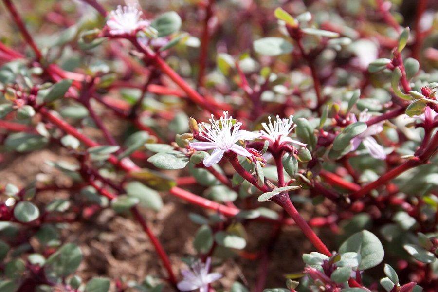

संठीHorse Purslane
Trianthema portulacastrum · Aizoaceae · FLR-0204

- Scientific name वैज्ञानिक नाम
- Trianthema portulacastrum L.
- Family कुल
- Aizoaceae
- Hindi हिंदी
- संठी
- Local names स्थानीय नाम
- santhi, sathi, santhee, horse purslane
- Status here यहाँ की स्थिति
- native
- Movement आवागमन
- Resident, here all year
- IUCN IUCN
- not evaluated
- Review समीक्षा
- audited and independently read
When to look कब देखें
Expected mainly in May, June, July, August, September, October, November. मुख्यतः मई, जून, जुलाई, अगस्त, सितंबर, अक्टूबर, नवंबर में अपेक्षित।
Uses and possibilities उपयोग और संभावनाएँ
“Traditional medicine” means a documented traditional use, not a claim that it works. Nothing on this page is medical advice.
Drawn from the documented uses in the profile below, where each is labelled traditional, current or a research lead. All uses →
संठी / Horse Purslane
Trianthema portulacastrum L. — Aizoaceae
संठी (घुइयाँ, घुई) — कपास और गर्मियों की फसलों के खेतों में उगने वाली एक नीचे फैलने वाली सफेद-हरी बूटी। पत्तियाँ छोटी, मोटी, गूदेदार, दो-दो एक जोड़े में। बीज छोटे, काले, कड़े। रस-भरी पत्तियाँ सूखने में आसान होती हैं — इसलिए कपास के खेत में मई-जून में निकालना पड़ता है। गर्मी सहन कर सकता है। कपास के लिए एक मुख्य समस्या।
Quick Identification त्वरित पहचान
| Feature | Description |
|---|---|
| Habit | Prostrate/spreading annual, 10–50 cm spread, fleshy/succulent |
| Leaves | Obovate, 0.5–2 cm, opposite, succulent, thick |
| Leaf color | Green or reddish, glabrous (hairless) |
| Flowers | Pink or white, small (0.5 cm), axillary, inconspicuous |
| Fruit | Capsule with many seeds; persistent calyx |
| Seeds | Small, black, ornithochory (dispersed by birds) |
| Stem | Spreading, reddish or green, rooting at nodes |
Field tip: A low, spreading, fleshy herb with opposite, thick succulent leaves and small pink flowers. The entire plant appears to hug the ground. Common in dry field margins and cotton fields in summer.
Morphology आकारिकी
| Measurement | Range |
|---|---|
| Plant spread | 10–50 cm |
| Leaf length | 0.5–2 cm |
| Leaf width | 0.3–1 cm |
| Flower diameter | 0.4–0.6 cm |
| Capsule diameter | 0.5–0.8 cm |
Habit: Prostrate or spreading annual herb; 10–50 cm in spread; stems herbaceous, reddish or green, rooting at nodes in contact with soil; glabrous.
Leaves: Opposite, decussate (crossing pattern), obovate to suborbicular, 0.5–2 cm × 0.3–1 cm; succulent and thick; apex rounded or slightly notched; base cuneate; margin entire; glabrous; color green to reddish.
Flowers: Small, pink or white, 0.5 cm across, axillary, borne singly; sepals 5, green; petals usually absent (or vestigial); stamens 1–10 or many, depending on the flower type; ovary superior.
Fruits: Thin-walled capsules, 0.5–0.8 cm diameter, containing multiple small black seeds.
Seeds: Very small, black, smooth, arranged in rows inside the capsule.
हिंदी: नीचे फैलने वाली, गूदेदार। पत्तियाँ मोटी, जोड़े में। फूल गुलाबी या सफेद। बीज काले, छोटे।
Associated Species / Interactions संबंधित प्रजातियाँ
- Host crop: Infests cotton fields, groundnut fields, and summer vegetable crops
- Associated weeds: Often found with other dry-land weeds such as Barnyard Grass in summer fields
- Soil moisture: Particularly problematic in drought years when other weeds are suppressed
- Ecological niche: Occupies the lower strata of mixed weed stands
Life Cycle / Phenology जीवन चक्र
| Month | Event |
|---|---|
| April–May | Seed germinates with summer heat and rains; seedling emergence |
| May–June | Rapid vegetative growth; leaf expansion and rooting at nodes |
| June–August | Flowering; continuous flower production from axils |
| July–September | Seed maturation and ripening; seeds shed from capsules |
| October onwards | Plant senesces in dry season; dies back |
Total growing period: 100–120 days. Seed longevity in soil: 10–15 years.
हिंदी: अप्रैल-मई में बीज अंकुरण। मई-जून में तेज़ वृद्धि। जून-अगस्त में फूल। सितंबर-नवंबर में बीज तैयार।
Pests and Diseases कीट और रोग
- Generally hardy: No specific pests or diseases recorded in most regions
- Powdery mildew: Occasionally affected in humid conditions, but damage is minor
- Rust: Rarely observed
Agricultural / Human Relevance कृषि प्रासंगिकता
Weed status: Trianthema portulacastrum is a common weed of cotton, groundnut, and summer vegetable crops in dry and semi-arid regions. The plant is particularly problematic in drought years when irrigated crop weed control is relaxed. It is moderately competitive with crops for water and light.
Control: The succulent nature of the plant makes it easy to hand-pull, especially after rain. Chemical control using broad-spectrum herbicides is possible but rarely cost-effective for this minor weed in small fields.
Traditional uses: In some regions, the succulent leaves are eaten as a potherb or added to curries. The plant is occasionally used in traditional medicine for treating urinary complaints (not validated).
Nutritional value: The leaves contain minerals and vitamins, but consumption is limited in most regions.
हिंदी: कपास की खेत में गर्मी में समस्या। सूखे में ज़्यादा समस्या। हाथ से निकालना आसान है। कभी-कभी सब्जी में भी डाला जाता है।
Expected Locally स्थानीय रूप से अपेक्षित
Not a field record. Written from published accounts for eastern Uttar Pradesh. No confirmed local sighting yet — if you have seen it, that is what the atlas needs.
अभी तक स्थानीय पुष्टि नहीं। यह विवरण प्रकाशित स्रोतों से है, किसी अवलोकन से नहीं।
Trianthema portulacastrum is expected to occur in cotton fields, groundnut fields, and dry field margins in Basti district during the summer and monsoon season (May to November). The spreading habit and succulent leaves should aid identification.
Distribution वितरण
Global range: Native to tropical Asia and Africa; now distributed throughout tropical and subtropical regions.
In India: Found throughout the country, particularly in cotton and dry-crop regions.
In Uttar Pradesh: Common in central and western UP, particularly in cotton-growing areas; present but less abundant in eastern UP.
In Basti district / eastern UP: Present in summer crop fields; abundance depends on seasonal moisture availability.
Research Questions शोध प्रश्न
Anyone can investigate these | कोई भी इन प्रश्नों की जाँच कर सकता है
- How many seeds does one santhi plant produce in a season, and what percentage are viable? — Count capsules; test viability.
- Is santhi more problematic in drought years, and why? — Compare weed density in wet vs. dry seasons.
- How long do santhi seeds remain viable in soil after 10 years of burial? — Bury seeds; test germination.
- Which cotton or groundnut varieties shade-suppress santhi most effectively? — Compare row spacing and density.
- Can santhi leaves be used as a potherb or fodder, and what is the nutritional value? / क्या संठी की पत्तियों को सब्जी के रूप में खाया जा सकता है? — Test nutritional composition; prepare and taste.
Similar Species मिलती-जुलती प्रजातियाँ
| Species | How to tell apart | हिंदी | |
|---|---|---|---|
| Portulaca oleracea (Garden [[kulfa\ | Purslane]]) | Leaves larger, rounder; flowers yellow; different family | पोर्टुलाका — बड़ी पत्तियाँ, पीले फूल |
| Alternanthera paronychioides | Leaves linear, smaller; different leaf arrangement | अलग पत्तियाँ |
Field rule: A low, spreading, fleshy herb with small opposite succulent leaves and small pink flowers, lying close to the ground is santhi.
Taxonomy & Classification वर्गीकरण
Original description. Trianthema portulacastrum was described by Carl Linnaeus in 1753 in Species Plantarum. The genus name Trianthema is derived from Greek tri- (three) and anthema (flower), referring to the flower structure. The specific epithet portulacastrum means "purslane-like," referring to the superficial similarity to purslane.
Subspecies. Monotypic — no subspecies are currently recognised.
Family and order placement. Aizoaceae (Fig-marigold family), order Caryophyllales. The family is predominantly succulent and includes many arid-region plants.
Phylogenetic notes. Trianthema portulacastrum is closely related to T. crystallina and other Old World Trianthema species.
IUCN status rationale. Not evaluated. Widespread; not assessed for conservation.
Photo Gallery फोटो गैलरी
Photos needed आवश्यक फोटो
- [ ] Full spreading plant on field margin (पूरा पौधा)
- [ ] Leaves showing opposite arrangement (पत्तियों की व्यवस्था)
- [ ] Flowers (गुलाबी फूल)
- [ ] Ripe capsule with seeds (पका फल, बीज)
No photos yet — add field photos to media/species/santhi/ and run node scripts/sync_photos.js.
References संदर्भ
- Linnaeus, C. (1753). Species Plantarum, Vol. 1. Laurentii Salvii, Stockholm.
- Hooker, J.D. (1872). Flora of British India, Vol. 1. L. Reeve & Co., London.
- Botanical Survey of India. State Flora Series: Flora of Uttar Pradesh. BSI, Kolkata.
- Indian Council of Agricultural Research (2021). Handbook of Agriculture. ICAR, New Delhi.
- Nath, R. & Gogoi, A.K. (2008). Weed management in cotton. Indian Journal of Weed Science 40(3): 142–148.
- GBIF Occurrence Data — Trianthema portulacastrum, India (2024–2026).
Source file: species/flora/crops_associated/santhi.md